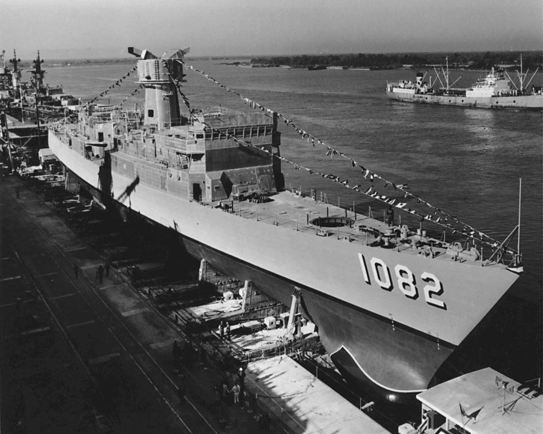

미 해군 초계기 대만해협 통과… 9월 미·중 정상회담 앞두고
미 해군 P-8A 포세이돈 초계기가 22일 대만해협 국제공역을 통과했다. 미 7함대는 "자유롭고 열린 인도·태평양에 대한 미국의 의지를 보여 준다"고 밝혔다. 9월 24일 워싱턴에서 예정된 미·중 정상회담을 앞둔 시점이다.
유종한 기자 · 2026.09.02
橋국제

미 7함대는 P-8A 초계기가 국제공역에서 대만해협을 통과했다고 발표했다. 중국군은 해당 항공기의 이동 전 구간을 추적·감시했다고 관영 매체가 전했다. 미국 군용기와 함정의 대만해협 통과는 몇 달에 한 번꼴로 이뤄져 온 정례 활동이다.
광고 문의 · 300×250해협의 법적 지위를 둘러싼 이견
미국과 대만은 대만해협을 국제 수로로 본다. 중국은 대만을 자국 영토로 규정하며 해협에 대한 관할권을 주장한다. 이 견해차 때문에 같은 통과 행위가 한쪽에서는 항행의 자유 이행으로, 다른 쪽에서는 주권 사안으로 설명된다.
이번 통과가 주목받는 이유는 시점이다. 9월 24일 워싱턴에서 열릴 예정인 시진핑 국가주석과 도널드 트럼프 미 대통령의 회담을 한 달여 앞두고 있기 때문이다. 양국은 대만, 무역, 기술 수출통제를 둘러싼 갈등 속에서 관계를 안정시키려 하고 있다.
회담 전까지 남은 시간
정상회담 전 기간에는 양측 모두 기존 활동을 유지하면서 협상력을 관리하는 경향이 있다. 정례 활동을 중단하면 그 자체가 양보로 읽히고, 반대로 강도를 높이면 회담 분위기를 해치기 때문이다. 이번 통과는 그 사이에 놓인 조치로 볼 여지가 있다.
華橋時報는 이번 사안을 어느 쪽 주장에 힘을 싣는 방식으로 다루지 않는다. 확인된 것은 초계기 한 대가 국제공역을 통과했고, 중국군이 이를 추적했으며, 회담이 9월 24일로 예정돼 있다는 사실이다. 이 세 가지 사이의 인과를 단정하는 것은 현시점에서 추정에 불과하다.
출처·참고 (사실 확인용 — 본문은 직접 재작성)
· Reuters
· Nikkei Asia (2026.08.22)
· 自由時報
· 環球時報
· Reuters
· Nikkei Asia (2026.08.22)
· 自由時報
· 環球時報